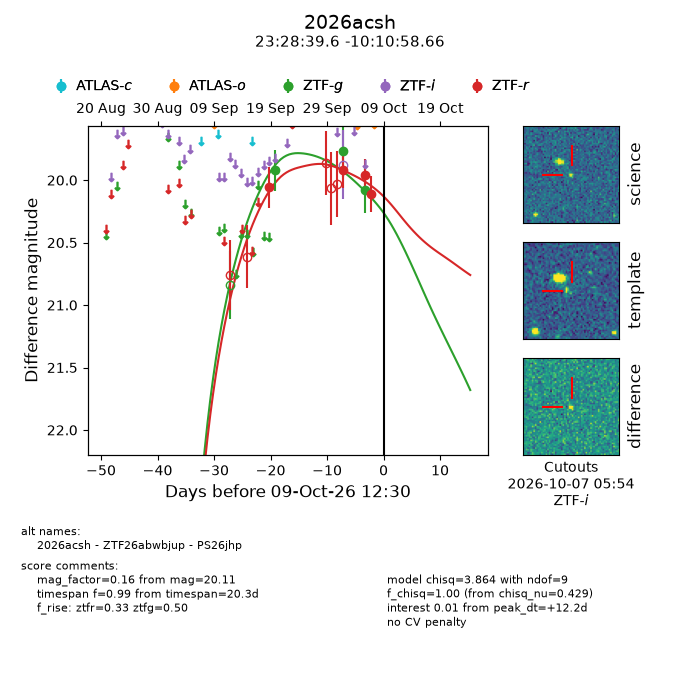
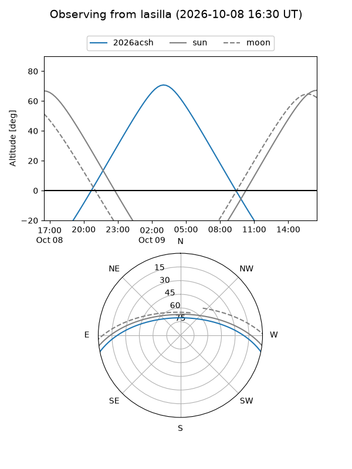
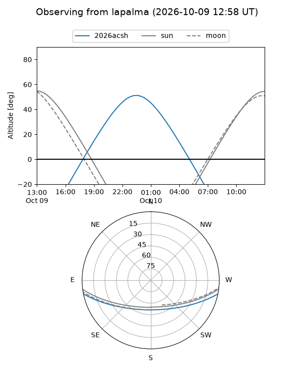
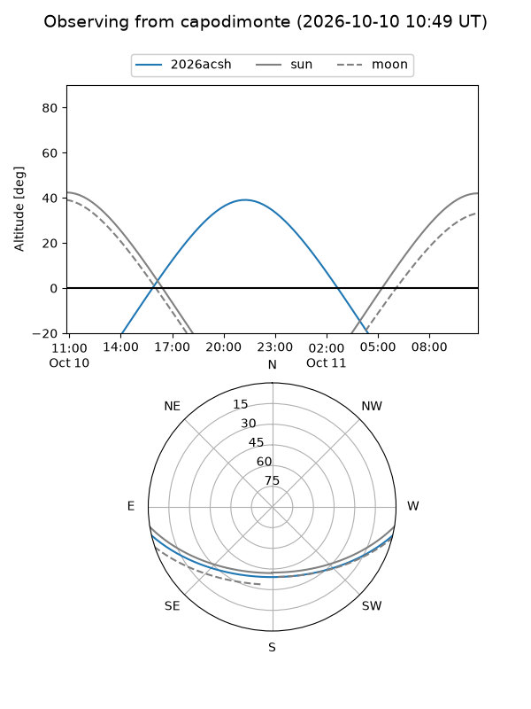
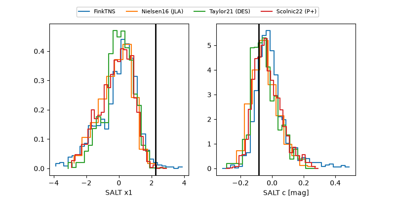

2026acsh
Target 2026acsh at 2026-10-09 12:32
Aliases and brokers:
FINK-ZTF: ztf.fink-portal.org/ZTF26abwbjup
Lasair-ZTF: lasair-ztf.lsst.ac.uk/objects/ZTF26abwbjup
ALeRCE-ZTF: alerce.online/object/ZTF26abwbjup
YSE-PZ: ziggy.ucolick.org/yse/transient_detail/2026acsh
TNS name: wis-tns.org/object/2026acsh
Direct TNS query: direct search
alt names
ZTF26abwbjup (ztf,fink_ztf)
2026acsh (tns,yse)
PS26jhp (panstarrs)
Coordinates:
equatorial (ra, dec) = 352.1651,-10.18296
equatorial (HMS+DMS) = 23:28:39.62,-10:10:58.66
galactic (l, b) = (69.9742,-64.16658)
Flags:
peak dt: +12.2
Photometry:
last ztfg=20.08, ztfr=20.11
3 ztfg, 4 ztfr detections
Lightcurve

Visibility



Additional plots
